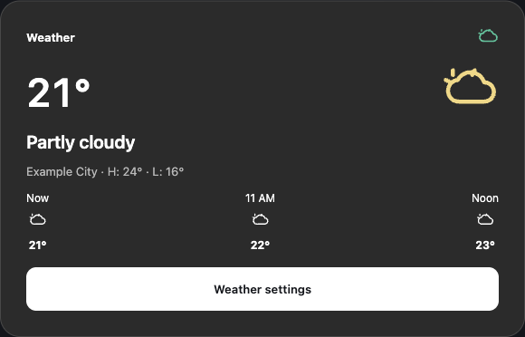

A clearer Weather widget.
Keep the temperature easy to read, with a calm condition label and a forecast that fits the space. This is a proposed Portal design using the Weather data already available in Immortal.
Weather scope approved; native candidate built, acceptance incomplete. The image is a browser mock with example data. Native visual fidelity and performance still require Portal verification.

What we can display with today's data
- Current temperature, city and a condition label derived from the existing weather code.
- Today's high and low when daily forecast data is available.
- Hourly temperatures or daily highs/lows, using the existing forecast mode.
- Existing Celsius/Fahrenheit and 12/24-hour preferences.
No account, Home Assistant service, Google services or new weather provider is needed for these fields.
Recommended first implementation
Implement the existing-data Weather design: current conditions, hourly and daily forecasts, forecast off, missing forecast, loading and unavailable states. Preserve automatic location lookup and the existing Weather settings destination.
Small, medium and large describe proposed content variants. The native widget will adapt to its actual saved width and height; saved placement, order and dimensions stay authoritative. The current renderer uses one layout at every size, so this adaptation must be implemented and verified.
The mock's “Choose a weather location” state is a separate proposal. The current app has no manual location editor and collapses lookup errors into unavailable data. A location picker is outside this first implementation and needs its own complete interaction design.
Required before release
- Compare native screenshots with the approved design in both themes and at standard and 150% text. Browser and Android default fonts currently differ, so the mock is not yet a pixel-match receipt.
- Verify resize, forecast mode, missing data and settings return on Family Area, without changing saved widget identities or placement.
- Keep existing background IO and inactive-page pause behavior. Changing the presentation must not add requests or restart loading merely because the widget is resized.
- Compare the same native scenarios before and after: request count, layout/draw time and memory. Reject a performance regression; Mac browser timings do not prove Portal performance.
- Build and test the accepted iteration, verify it on Family, then install the exact accepted APK on Living.
Source limits kept visible
IP-based location can resolve to an ISP city. Current fields do not include humidity, wind, feels-like temperature or freshness timestamps. Forecast failures currently remove the forecast; this review does not promise offline forecast persistence.
A separate source review found two correctness concerns: hourly labels can retain the old clock format until refresh, and the exact-hour cutoff could select the previous hour as “Now.” The cutoff correction has a separate test receipt; the clock-format correction also has its own scoped receipt. Native Home/settings-return acceptance remains separate.